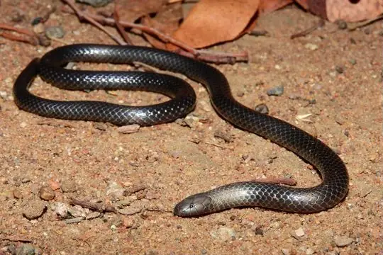
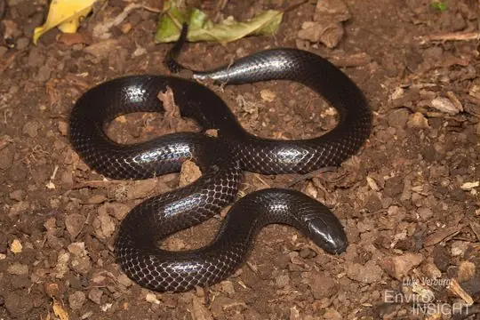

Amblyodipsas
The genus Amblyodipsas (family Atractaspididae) has 9 species in SnakeList (all venomous), recorded in 31 countries.
- 9species
- 9venomous
- 31countries
About the genus
A genus of the family Atractaspididae (burrowing asps, stiletto snakes and relatives).
Species
Showing 9 species
 Common Purple-glossed SnakeAmblyodipsas polylepis
Common Purple-glossed SnakeAmblyodipsas polylepis Dull Purple-glossed SnakeAmblyodipsas unicolor
Dull Purple-glossed SnakeAmblyodipsas unicolor
Eastern Purple-glossed SnakeAmblyodipsas microphthalma Kalahari Purple-glossed SnakeAmblyodipsas ventrimaculata
Kalahari Purple-glossed SnakeAmblyodipsas ventrimaculata Katanga Purple-glossed SnakeAmblyodipsas katangensis
Katanga Purple-glossed SnakeAmblyodipsas katangensis- No photo yetMpwapwa Purple-glossed SnakeAmblyodipsas dimidiata

Natal Purple-glossed SnakeAmblyodipsas concolor- No photo yetRodhain's Purple-glossed SnakeAmblyodipsas rodhaini
- No photo yetTeitana Purple-glossed SnakeAmblyodipsas teitana
No snakes in Amblyodipsas match.
About the genus Amblyodipsas
- Family: Atractaspididae.
- Recorded in: Angola, Benin, Botswana, Burkina Faso, Central African Republic, Chad, Democratic Republic of the Congo, Eswatini, Gambia, Ghana, Guinea, Guinea-Bissau, Ivory Coast, Kenya, Malawi, Mali, Mozambique, Namibia, Niger, Nigeria, Senegal, Sierra Leone, Somalia, South Africa, South Sudan, Sudan, Tanzania, Togo, Uganda, Zambia, Zimbabwe.